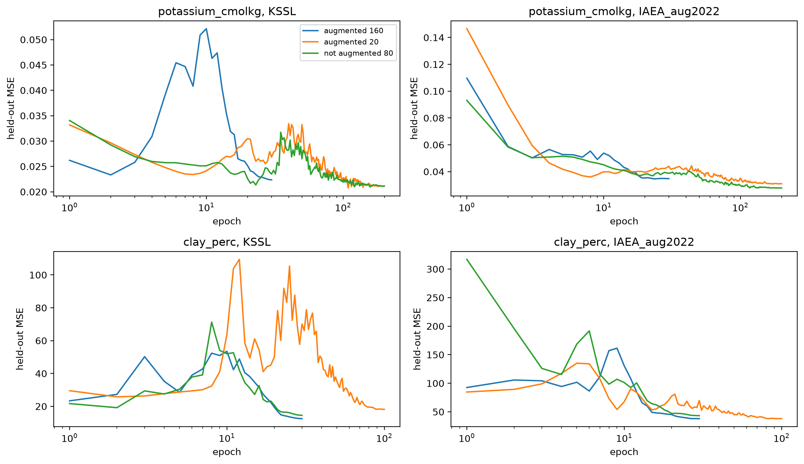

import matplotlib.pyplot as plt
from fastcore.test import *
from soilspecdl.all import SpectralCNN, regression_scores
from soilspecdata.datasets.ringtrial import load_ringtrial
from ossl_rt_transfer.data import rt_path, near_dup_groups
from ossl_rt_transfer.pretrain import model_dir, load_pretrainedFine-tuning
Fine-tuning the pretrained CNNs on the soils of one instrument, against PLSR trained on the same soils
The cells that read the ring-trial data and train are marked #| rtdata. The outputs on this page come from a local run.
This notebook tests what the pretrained CNNs gain from the soils of one instrument. On each instrument, the soils are split into grouped folds, and each method is trained on the other folds and predicts the held-out fold:
zero-shot: the pretrained model as it is, for reference.ridge block 4: ridge regression on the frozen features of block 4, every channel at every position. Inossl-fuku-transferthis was best or level with the best at every training size.fine-tuned: all of the pretrained model, fine-tuned with a one-cycle schedule.PLSR: PLSR trained only on the instrument’s soils, with the preprocessing of mirzai and its number of components chosen by inner grouped cross-validation.
The CNN methods start from three pretrained models: the augmented 160-epoch models of 06_aug_pretrain, the augmented 20-epoch models of 05_augment, and the unaugmented 80-epoch models of 01_pretrain. This first run covers K, the main property, and clay, the control, on two instruments: KSSL, where pretraining has no instrument gap, and IAEA, the instrument of the Fukushima scans and the farthest from KSSL.
Data and folds
rt_xy gives the spectra of one instrument after SNV, with the targets on the scale the models use: log1p for K. Every method gets these spectra. A second SNV, as in BatchSNV and in the PLSR pipeline, leaves them unchanged:
rt_xy
def rt_xy(
spectra, # `Spectra` of one ring-trial instrument
prop, # Ring-trial property, a key of `ossl_props`
)->tuple: # SNV spectra, targets (`log1p` for the properties in `log_props`), sample idsSpectra and targets of the soils of one instrument that have a value of prop, on the scale the models use
soil_folds deals the near-duplicate groups of 00_data into folds. The folds are set by sample id, so a soil is in the same fold on every instrument, and the predictions of two instruments can be compared soil by soil:
soil_folds
def soil_folds(
groups:pandas.Series, # Near-duplicate group of each soil, indexed by sample id
k:int=10, # Number of folds
repeats:int=10, # Number of fold assignments
)->pandas.DataFrame: # Fold of each soil, one row per repeat, one column per sample idGrouped k-fold assignments, the same for a soil on every instrument
g = pd.Series([0, 0, 1, 2, 3, 4, 5, 5], index=[f'RT_{i}' for i in range(8)])
f = soil_folds(g, k=3, repeats=4)
test_eq(f.shape, (4, 8))
test_eq((f['RT_0'] == f['RT_1']).all(), True)
test_eq(f.loc[2, ['RT_6', 'RT_7']].nunique(), 1)Methods
plsr follows the PLSR pipeline of mirzai: SNV, a Savitzky-Golay first derivative with a window of 11 points and a polynomial of degree 1, and removal of the CO₂ region. fit_plsr chooses the number of components by grouped cross-validation on the training soils. finetune fine-tunes all of a copy of the pretrained model. The held-out soils are its validation set, so the loss, R² and bias on them are recorded after every epoch, but they play no part in training. ridge_block4 fits ridge regression on the frozen block-4 features, with the penalty chosen by leave-one-out cross-validation:
ridge_block4
def ridge_block4(
model, # Pretrained `SpectralCNN`
X, # SNV spectra on `rt_wns`, one per row
y, # Targets
train, # Indices of the training soils
test, # Indices of the soils to predict
)->numpy.ndarray: # Predictions for `test`Ridge regression on the frozen block-4 features of model, every channel at every position
finetune
def finetune(
model, # Pretrained model
X, # SNV spectra on `rt_wns`, one per row
y, # Targets
train, # Indices of the training soils
test, # Indices of the held-out soils, only scored
epochs, # Number of one-cycle epochs
lr:float=0.003, # Maximum learning rate
bs:int=16, # Batch size
seed:int=0, # Seed for the training
)->tuple: # Predictions for `test`, and the held-out loss, R² and bias after each epochFine-tune a copy of all of model on the soils train
fit_plsr
def fit_plsr(
X, # Spectra on `rt_wns`, one per row
y, # Targets
groups, # Near-duplicate group of each soil
max_components:int=15, # Largest number of components to try
k:int=5, # Number of inner folds
):plsr with the number of components that grouped inner cross-validation chooses
plsr
def plsr(
n_components:int=10, # Number of PLS components
):PLSR with the preprocessing of mirzai: SNV, Savitzky-Golay first derivative, CO₂ region removed
On random spectra and targets, each method returns one prediction per held-out soil, and finetune one row of history per epoch:
rng = np.random.default_rng(0)
Xs = preprocess().fit_transform(rng.uniform(0.2, 2, (40, len(rt_wns))))
ys, gs = rng.normal(size=40), np.arange(40) // 2
tr, te = np.arange(30), np.arange(30, 40)
test_eq(fit_plsr(Xs[tr], ys[tr], gs[tr], max_components=3).predict(Xs[te]).shape, (10,))
p, h = finetune(SpectralCNN(), Xs, ys, tr, te, epochs=2)
test_eq(p.shape, (10,))
test_eq(h.columns.tolist(), ['epoch', 'train_loss', 'valid_loss', 'r2', 'bias'])
test_eq(len(h), 2)
test_eq(ridge_block4(SpectralCNN(), Xs, ys, tr, te).shape, (10,))choose_epochs cross-validates finetune over several numbers of epochs. cv_cnn and cv_plsr give the held-out predictions of every fold of every repeat, one row per soil:
cv_plsr
def cv_plsr(
X, # Spectra on `rt_wns`, one per row
y, # Targets
ids, # Sample id of each row
groups:pandas.Series, # Near-duplicate group of each soil, indexed by sample id
folds, # Fold of each soil, from `soil_folds`
)->pandas.DataFrame: # Held-out predictionsHeld-out predictions of fit_plsr, for every fold of every repeat
cv_cnn
def cv_cnn(
model, # Pretrained model
X, # SNV spectra on `rt_wns`, one per row
y, # Targets
ids, # Sample id of each row
folds, # Fold of each soil, from `soil_folds`
epochs, # Number of fine-tuning epochs
)->tuple: # Held-out predictions, and the fine-tuning historiesHeld-out predictions of the pretrained model as it is, the block-4 ridge and the fine-tuned model, for every fold of every repeat
choose_epochs
def choose_epochs(
model, # Pretrained model
X, # SNV spectra on `rt_wns`, one per row
y, # Targets
groups, # Near-duplicate group of each soil
grid:tuple=(10, 30, 100, 200), # Numbers of epochs to try
k:int=5, # Number of folds
)->pandas.Series: # Mean held-out loss at the last epoch, for each number of epochsGrouped cross-validation of finetune over the numbers of epochs in grid
ids = np.array([f'RT_{i}' for i in range(40)])
fs = soil_folds(pd.Series(gs, index=ids), k=4, repeats=2)
pc, hc = cv_cnn(SpectralCNN(), Xs, ys, ids, fs, epochs=1)
test_eq(len(pc), 3 * 2 * 40)
test_eq(pc.groupby(['method', 'repeat']).sample_id.nunique().unique(), [40])
test_eq(len(cv_plsr(Xs, ys, ids, pd.Series(gs, index=ids), fs)), 2 * 40)paired_test compares two methods on the same units, such as soils or groups of near-duplicate soils. It takes the error of each method on each unit and applies a Wilcoxon signed-rank test to the differences:
paired_test
def paired_test(
a:pandas.Series, # Error of method A on each unit, such as the mean squared error of a group of soils
b:pandas.Series, # Error of method B on the same units
)->dict: # Number of units, mean error of A and B, share of units where A has the smaller error, Wilcoxon p-valueWilcoxon signed-rank test of paired errors of two methods
e = pd.Series(rng.uniform(size=30))
r = paired_test(e, e + 0.1)
test_eq((r['n'], r['A_better']), (30, 1.))
assert r['p'] < 1e-3
test_eq(paired_test(e, e[::-1].reset_index(drop=True))['n'], 30)cached saves each result table as a CSV file, so a rerun of a notebook loads it instead of computing it again:
cached
def cached(
fname, # File name, without the `.csv` suffix
f, # Function that computes the DataFrame
path:NoneType=None, # Folder of the file, by default `finetune` in `model_dir()`
)->pandas.DataFrame: # The saved DataFrame, or the result of `f`Load the DataFrame saved under fname, or compute it with f and save it
import tempfile
with tempfile.TemporaryDirectory() as d:
df = cached('t', lambda: pd.DataFrame({'a': [1, 2]}), d)
test_eq(cached('t', lambda: None, d), df)repeat_scores scores each repeat for each group of rows, pooling the held-out predictions of its folds. R² and CCC are on the scale the models use; RMSE and bias are on the property’s own scale. group_errors averages the squared error on the model scale over the repeats and over the soils of each near-duplicate group, the unit of paired_test:
group_errors
def group_errors(
preds:pandas.DataFrame, # Held-out predictions, with columns `sample_id`, `y` and `pred`
groups:pandas.Series, # Near-duplicate group of each soil, indexed by sample id
keys:tuple=('instrument', 'property', 'start', 'method'), # Columns that define a group of rows
)->pandas.Series: # Mean squared error, indexed by `keys` and `group`Mean squared error on the model scale of each near-duplicate group, over its soils and the repeats
repeat_scores
def repeat_scores(
preds:pandas.DataFrame, # Held-out predictions, with columns `property`, `repeat`, `y` and `pred`
keys:tuple=('instrument', 'property', 'start', 'method'), # Columns that define a group of rows
)->pandas.DataFrame: # Scores of `regression_scores`, one row per group and repeatScores of each repeat for each group of keys, each repeat pooling the held-out predictions of its folds
tp = pd.DataFrame({'instrument': 'A', 'property': 'potassium_cmolkg', 'start': 's', 'method': 'm', 'repeat': np.repeat([0, 1], 4),
'sample_id': ['a', 'b', 'c', 'd'] * 2, 'y': [0., 1, 2, 3] * 2, 'pred': [0., 1, 2, 3] * 2})
test_eq(repeat_scores(tp)['R²'].tolist(), [1., 1.])
test_eq(group_errors(tp, pd.Series([0, 0, 1, 1], index=list('abcd'))).tolist(), [0., 0.])Number of epochs
On 63 training soils with a batch size of 16, an epoch is 3 or 4 optimiser steps. The ossl-fuku-transfer schedule of 20 epochs was chosen on about 1,000 samples and does not carry over. The number of epochs is chosen once for each property and starting model, by grouped 5-fold cross-validation over the KSSL soils, from 10, 30, 100 and 200 epochs. The same number then applies to every fold, repeat and instrument. Every KSSL soil is a test soil in some fold of the main run, so this choice uses soils that the main run later tests. It is one number out of four, so the optimism this adds is small. The table gives the mean held-out loss at the last epoch:
rt = load_ringtrial(rt_path())
groups = pd.Series(near_dup_groups(rt['KSSL']), index=rt['KSSL'].sample_ids)
props, insts = ['potassium_cmolkg', 'clay_perc'], ['KSSL', 'IAEA_aug2022']
starts = {'augmented 160': 'aug_ep160', 'augmented 20': 'aug_ep20', 'not augmented 80': 'snv_ep80'}
models = {(p, s): load_pretrained(f'ossl_{p}_{f}') for p in props for s, f in starts.items()}
res_dir = model_dir()/'finetune'; res_dir.mkdir(exist_ok=True)
def epoch_table(p):
X, y, ids = rt_xy(rt['KSSL'], p)
return pd.DataFrame({s: choose_epochs(models[(p, s)], X, y, groups[ids].values) for s in starts})
ep_cv = pd.concat({p: cached(f'epochs_{p}', lambda: epoch_table(p)) for p in props})
ep_cv.round(4)| augmented 160 | augmented 20 | not augmented 80 | ||
|---|---|---|---|---|
| epochs | ||||
| potassium_cmolkg | 10 | 0.0302 | 0.0343 | 0.0317 |
| 30 | 0.0227 | 0.0242 | 0.0212 | |
| 100 | 0.0229 | 0.0228 | 0.0211 | |
| 200 | 0.0233 | 0.0215 | 0.0210 | |
| clay_perc | 10 | 25.0278 | 30.1643 | 27.5450 |
| 30 | 17.9355 | 26.6469 | 19.2665 | |
| 100 | 26.7567 | 26.0922 | 27.8721 | |
| 200 | 27.7100 | 30.5101 | 30.1152 |
n_epochs = {(p, s): int(ep_cv.loc[p, s].idxmin()) for p in props for s in starts}
n_epochs{('potassium_cmolkg', 'augmented 160'): 30,
('potassium_cmolkg', 'augmented 20'): 200,
('potassium_cmolkg', 'not augmented 80'): 200,
('clay_perc', 'augmented 160'): 30,
('clay_perc', 'augmented 20'): 100,
('clay_perc', 'not augmented 80'): 30}For K, the held-out loss changes little from 30 to 200 epochs, so the choice between them matters little. For clay, the loss is not monotonic in the number of epochs: 30 epochs is best for two starting models and 100 for the third, and the loss at 30 and 100 epochs differs by up to about 50%. This choice comes from one seed and one fold assignment, so for clay it is probably noisy.
Cross-validation
Each instrument, property and starting model runs 10 grouped folds, repeated 10 times with different fold assignments. The predictions and fine-tuning histories are saved in res_dir, so a rerun of the notebook loads them:
folds = soil_folds(groups)
preds, hists = [], []
for i in insts:
for p in props:
X, y, ids = rt_xy(rt[i], p)
tag = dict(instrument=i, property=p)
preds.append(cached(f'plsr_{i}_{p}', lambda: cv_plsr(X, y, ids, groups, folds)).assign(**tag, start='none'))
for s in starts:
def run():
pc, hc = cv_cnn(models[(p, s)], X, y, ids, folds, n_epochs[(p, s)])
hc.to_csv(res_dir/f'hist_{i}_{p}_{starts[s]}.csv')
return pc
preds.append(cached(f'cnn_{i}_{p}_{starts[s]}', run).assign(**tag, start=s))
hists.append(pd.read_csv(res_dir/f'hist_{i}_{p}_{starts[s]}.csv', index_col=0).assign(**tag, start=s))
preds, hists = pd.concat(preds, ignore_index=True), pd.concat(hists, ignore_index=True)
test_eq(preds.groupby(['instrument', 'property', 'start', 'method', 'repeat']).size().max(), 69)Scores against wet chemistry
For each repeat, the scores pool the held-out predictions of its 10 folds. The table gives their mean over the 10 repeats, the standard deviation of R² between repeats, and Lin’s concordance correlation coefficient (CCC), the paper’s main metric. For K, R² is on the log1p scale, and RMSE and bias are in cmol/kg:
keys = ['instrument', 'property', 'start', 'method']
per_repeat = repeat_scores(preds, keys)
scores = per_repeat.groupby(keys).agg(**{'R²': ('R²', 'mean'), 'R² sd': ('R²', 'std'), 'CCC': ('CCC', 'mean'), 'RMSE': ('RMSE', 'mean'), 'bias': ('bias', 'mean')})
scores.round(3)| R² | R² sd | CCC | RMSE | bias | ||||
|---|---|---|---|---|---|---|---|---|
| instrument | property | start | method | |||||
| IAEA_aug2022 | clay_perc | augmented 160 | fine-tuned | 0.728 | 0.027 | 0.838 | 6.101 | -0.062 |
| ridge block 4 | 0.662 | 0.033 | 0.809 | 6.796 | -0.234 | |||
| zero-shot | 0.271 | 0.000 | 0.637 | 10.000 | -5.388 | |||
| augmented 20 | fine-tuned | 0.728 | 0.019 | 0.842 | 6.104 | 0.048 | ||
| ridge block 4 | 0.600 | 0.066 | 0.770 | 7.381 | 0.237 | |||
| zero-shot | 0.395 | 0.000 | 0.625 | 9.107 | -0.513 | |||
| none | PLSR | 0.448 | 0.163 | 0.755 | 8.619 | -0.447 | ||
| not augmented 80 | fine-tuned | 0.687 | 0.029 | 0.816 | 6.546 | 0.004 | ||
| ridge block 4 | 0.694 | 0.019 | 0.823 | 6.480 | -0.050 | |||
| zero-shot | -2.729 | 0.000 | 0.244 | 22.611 | -19.052 | |||
| potassium_cmolkg | augmented 160 | fine-tuned | 0.385 | 0.071 | 0.642 | 0.361 | -0.028 | |
| ridge block 4 | 0.458 | 0.033 | 0.625 | 0.354 | -0.023 | |||
| zero-shot | -2.122 | 0.000 | 0.358 | 0.875 | 0.656 | |||
| augmented 20 | fine-tuned | 0.448 | 0.063 | 0.663 | 0.347 | -0.021 | ||
| ridge block 4 | 0.424 | 0.043 | 0.628 | 0.360 | -0.019 | |||
| zero-shot | -3.282 | 0.000 | 0.287 | 1.082 | 0.873 | |||
| none | PLSR | 0.404 | 0.090 | 0.631 | 0.366 | -0.014 | ||
| not augmented 80 | fine-tuned | 0.508 | 0.041 | 0.688 | 0.334 | -0.038 | ||
| ridge block 4 | 0.441 | 0.049 | 0.627 | 0.355 | -0.023 | |||
| zero-shot | -2.572 | 0.000 | 0.372 | 1.026 | 0.767 | |||
| KSSL | clay_perc | augmented 160 | fine-tuned | 0.911 | 0.012 | 0.952 | 3.492 | 0.058 |
| ridge block 4 | 0.802 | 0.015 | 0.891 | 5.206 | -0.071 | |||
| zero-shot | 0.681 | 0.000 | 0.857 | 6.611 | 4.480 | |||
| augmented 20 | fine-tuned | 0.870 | 0.007 | 0.928 | 4.225 | 0.062 | ||
| ridge block 4 | 0.769 | 0.023 | 0.874 | 5.617 | -0.010 | |||
| zero-shot | 0.685 | 0.000 | 0.846 | 6.577 | 3.769 | |||
| none | PLSR | 0.807 | 0.037 | 0.906 | 5.120 | -0.244 | ||
| not augmented 80 | fine-tuned | 0.896 | 0.013 | 0.944 | 3.773 | 0.091 | ||
| ridge block 4 | 0.761 | 0.011 | 0.869 | 5.718 | -0.113 | |||
| zero-shot | 0.758 | 0.000 | 0.891 | 5.763 | 3.297 | |||
| potassium_cmolkg | augmented 160 | fine-tuned | 0.602 | 0.047 | 0.765 | 0.317 | -0.024 | |
| ridge block 4 | 0.243 | 0.094 | 0.595 | 0.474 | 0.019 | |||
| zero-shot | 0.454 | 0.000 | 0.778 | 0.390 | 0.043 | |||
| augmented 20 | fine-tuned | 0.628 | 0.049 | 0.774 | 0.302 | -0.027 | ||
| ridge block 4 | 0.282 | 0.118 | 0.609 | 0.429 | 0.007 | |||
| zero-shot | 0.285 | 0.000 | 0.725 | 0.442 | 0.094 | |||
| none | PLSR | 0.145 | 0.166 | 0.537 | 0.454 | 0.015 | ||
| not augmented 80 | fine-tuned | 0.626 | 0.044 | 0.769 | 0.309 | -0.036 | ||
| ridge block 4 | 0.296 | 0.089 | 0.620 | 0.436 | 0.009 | |||
| zero-shot | 0.205 | 0.000 | 0.739 | 0.469 | 0.123 |
Paired tests
The scores above pool all soils, so they do not show whether one method beats another on most soils or on a few. The paired tests compare methods on the same soils. For each method, the squared error on the model scale (log1p for K) is averaged over the 10 repeats and over the soils of each near-duplicate group. Near-duplicate soils are not independent, so the unit of the test is the group. A_better is the share of groups where method A has the smaller error. The p-values are not corrected for the number of tests.
Each CNN method against PLSR trained on the same soils:
ge = group_errors(preds, groups, keys)
test_eq(ge.index.get_level_values('group').isna().sum(), 0)
cnn_keys = sorted(preds.loc[preds.start != 'none', ['start', 'method']].drop_duplicates().itertuples(index=False, name=None))
vs_plsr = pd.DataFrame({(i, p, s, m): paired_test(ge.loc[(i, p, s, m)], ge.loc[(i, p, 'none', 'PLSR')])
for i in insts for p in props for s, m in cnn_keys}).T
vs_plsr.index.names = keys
vs_plsr.round(3)| n | A | B | A_better | p | ||||
|---|---|---|---|---|---|---|---|---|
| instrument | property | start | method | |||||
| KSSL | potassium_cmolkg | augmented 160 | fine-tuned | 63.0 | 0.025 | 0.053 | 0.778 | 0.000 |
| ridge block 4 | 63.0 | 0.047 | 0.053 | 0.810 | 0.000 | |||
| zero-shot | 63.0 | 0.031 | 0.053 | 0.651 | 0.025 | |||
| augmented 20 | fine-tuned | 63.0 | 0.023 | 0.053 | 0.778 | 0.000 | ||
| ridge block 4 | 63.0 | 0.044 | 0.053 | 0.730 | 0.000 | |||
| zero-shot | 63.0 | 0.038 | 0.053 | 0.603 | 0.141 | |||
| not augmented 80 | fine-tuned | 63.0 | 0.023 | 0.053 | 0.857 | 0.000 | ||
| ridge block 4 | 63.0 | 0.043 | 0.053 | 0.714 | 0.001 | |||
| zero-shot | 63.0 | 0.043 | 0.053 | 0.571 | 0.279 | |||
| clay_perc | augmented 160 | fine-tuned | 63.0 | 13.264 | 28.300 | 0.556 | 0.095 | |
| ridge block 4 | 63.0 | 29.222 | 28.300 | 0.540 | 0.816 | |||
| zero-shot | 63.0 | 46.706 | 28.300 | 0.413 | 0.050 | |||
| augmented 20 | fine-tuned | 63.0 | 19.331 | 28.300 | 0.524 | 0.464 | ||
| ridge block 4 | 63.0 | 34.208 | 28.300 | 0.556 | 0.913 | |||
| zero-shot | 63.0 | 46.559 | 28.300 | 0.381 | 0.009 | |||
| not augmented 80 | fine-tuned | 63.0 | 15.368 | 28.300 | 0.556 | 0.059 | ||
| ridge block 4 | 63.0 | 35.374 | 28.300 | 0.540 | 0.696 | |||
| zero-shot | 63.0 | 35.797 | 28.300 | 0.476 | 0.200 | |||
| IAEA_aug2022 | potassium_cmolkg | augmented 160 | fine-tuned | 63.0 | 0.037 | 0.037 | 0.508 | 0.832 |
| ridge block 4 | 63.0 | 0.034 | 0.037 | 0.698 | 0.026 | |||
| zero-shot | 63.0 | 0.180 | 0.037 | 0.159 | 0.000 | |||
| augmented 20 | fine-tuned | 63.0 | 0.033 | 0.037 | 0.698 | 0.019 | ||
| ridge block 4 | 63.0 | 0.036 | 0.037 | 0.619 | 0.262 | |||
| zero-shot | 63.0 | 0.240 | 0.037 | 0.111 | 0.000 | |||
| not augmented 80 | fine-tuned | 63.0 | 0.030 | 0.037 | 0.619 | 0.073 | ||
| ridge block 4 | 63.0 | 0.035 | 0.037 | 0.619 | 0.070 | |||
| zero-shot | 63.0 | 0.210 | 0.037 | 0.127 | 0.000 | |||
| clay_perc | augmented 160 | fine-tuned | 63.0 | 40.257 | 80.976 | 0.714 | 0.001 | |
| ridge block 4 | 63.0 | 49.569 | 80.976 | 0.683 | 0.007 | |||
| zero-shot | 63.0 | 92.233 | 80.976 | 0.444 | 0.039 | |||
| augmented 20 | fine-tuned | 63.0 | 40.545 | 80.976 | 0.746 | 0.000 | ||
| ridge block 4 | 63.0 | 59.100 | 80.976 | 0.746 | 0.004 | |||
| zero-shot | 63.0 | 76.497 | 80.976 | 0.397 | 0.084 | |||
| not augmented 80 | fine-tuned | 63.0 | 45.611 | 80.976 | 0.810 | 0.000 | ||
| ridge block 4 | 63.0 | 45.130 | 80.976 | 0.746 | 0.001 | |||
| zero-shot | 63.0 | 497.958 | 80.976 | 0.111 | 0.000 |
Each augmented starting model against the unaugmented 80-epoch model, with the same method:
ref = 'not augmented 80'
vs_ref = pd.DataFrame({(i, p, s, m): paired_test(ge.loc[(i, p, s, m)], ge.loc[(i, p, ref, m)])
for i in insts for p in props for s in starts if s != ref
for m in ['zero-shot', 'ridge block 4', 'fine-tuned']}).T
vs_ref.index.names = keys
vs_ref.round(3)| n | A | B | A_better | p | ||||
|---|---|---|---|---|---|---|---|---|
| instrument | property | start | method | |||||
| KSSL | potassium_cmolkg | augmented 160 | zero-shot | 63.0 | 0.031 | 0.043 | 0.651 | 0.004 |
| ridge block 4 | 63.0 | 0.047 | 0.043 | 0.460 | 0.902 | |||
| fine-tuned | 63.0 | 0.025 | 0.023 | 0.222 | 0.002 | |||
| augmented 20 | zero-shot | 63.0 | 0.038 | 0.043 | 0.508 | 0.400 | ||
| ridge block 4 | 63.0 | 0.044 | 0.043 | 0.381 | 0.141 | |||
| fine-tuned | 63.0 | 0.023 | 0.023 | 0.429 | 0.193 | |||
| clay_perc | augmented 160 | zero-shot | 63.0 | 46.706 | 35.797 | 0.365 | 0.012 | |
| ridge block 4 | 63.0 | 29.222 | 35.374 | 0.540 | 0.515 | |||
| fine-tuned | 63.0 | 13.264 | 15.368 | 0.571 | 0.352 | |||
| augmented 20 | zero-shot | 63.0 | 46.559 | 35.797 | 0.349 | 0.020 | ||
| ridge block 4 | 63.0 | 34.208 | 35.374 | 0.524 | 0.929 | |||
| fine-tuned | 63.0 | 19.331 | 15.368 | 0.587 | 0.598 | |||
| IAEA_aug2022 | potassium_cmolkg | augmented 160 | zero-shot | 63.0 | 0.180 | 0.210 | 0.556 | 0.407 |
| ridge block 4 | 63.0 | 0.034 | 0.035 | 0.619 | 0.242 | |||
| fine-tuned | 63.0 | 0.037 | 0.030 | 0.286 | 0.002 | |||
| augmented 20 | zero-shot | 63.0 | 0.240 | 0.210 | 0.429 | 0.083 | ||
| ridge block 4 | 63.0 | 0.036 | 0.035 | 0.508 | 0.774 | |||
| fine-tuned | 63.0 | 0.033 | 0.030 | 0.444 | 0.676 | |||
| clay_perc | augmented 160 | zero-shot | 63.0 | 92.233 | 497.958 | 0.905 | 0.000 | |
| ridge block 4 | 63.0 | 49.569 | 45.130 | 0.413 | 0.154 | |||
| fine-tuned | 63.0 | 40.257 | 45.611 | 0.397 | 0.203 | |||
| augmented 20 | zero-shot | 63.0 | 76.497 | 497.958 | 0.889 | 0.000 | ||
| ridge block 4 | 63.0 | 59.100 | 45.130 | 0.508 | 0.396 | |||
| fine-tuned | 63.0 | 40.545 | 45.611 | 0.571 | 0.637 |
Distance from the KSSL prediction
For each soil, the prediction from the IAEA spectrum is compared with the prediction from the KSSL spectrum, made by the same method from the same starting model, trained on the same soils of each instrument. Soil and label effects are the same on both sides. The table gives the RMS of the difference over the soils, as the mean over the 10 repeats, on the scale the models use: log1p for K:
k = ['property', 'start', 'method', 'repeat', 'sample_id']
pair = preds[preds.instrument == 'IAEA_aug2022'].merge(preds[preds.instrument == 'KSSL'], on=k, suffixes=('_iaea', '_kssl'))
dist = (pair.assign(d2=(pair.pred_iaea - pair.pred_kssl)**2).groupby(k[:-1]).d2.mean()**0.5).groupby(k[:-2]).mean()
dist.unstack('method').round(3)| method | PLSR | fine-tuned | ridge block 4 | zero-shot | |
|---|---|---|---|---|---|
| property | start | ||||
| clay_perc | augmented 160 | NaN | 4.647 | 3.865 | 12.945 |
| augmented 20 | NaN | 4.631 | 6.025 | 9.920 | |
| none | 6.982 | NaN | NaN | NaN | |
| not augmented 80 | NaN | 4.947 | 4.567 | 25.678 | |
| potassium_cmolkg | augmented 160 | NaN | 0.125 | 0.126 | 0.399 |
| augmented 20 | NaN | 0.106 | 0.109 | 0.429 | |
| none | 0.121 | NaN | NaN | NaN | |
| not augmented 80 | NaN | 0.103 | 0.123 | 0.400 |
Fine-tuning curves
The held-out loss after each epoch is the mean over folds and repeats. It is recorded for analysis only. With a one-cycle schedule, the loss at a given epoch of a long run does not show what a shorter run would reach, because the learning rate is still high at that point. In the middle of the schedule the loss is unstable, and it settles only near the end. The curves therefore show how stable the end of the schedule is, not which number of epochs is best:
fig, axs = plt.subplots(2, 2, figsize=(12, 7))
for (ax, (i, p)) in zip(axs.flat, [(i, p) for p in props for i in insts]):
for s in starts:
h = hists[(hists.instrument == i) & (hists.property == p) & (hists.start == s)].groupby('epoch').valid_loss.mean()
ax.plot(h.index + 1, h.values, label=s)
ax.set(title=f'{p}, {i}', xlabel='epoch', ylabel='held-out MSE', xscale='log')
axs[0, 0].legend(fontsize=8)
plt.tight_layout();
Results
Scores against wet chemistry. On KSSL, fine-tuning gives the highest R² for both properties and every starting model: 0.87 to 0.91 for clay and 0.60 to 0.63 for K. PLSR trained on the same soils gives 0.81 for clay and 0.15 for K. Zero-shot gives 0.68 to 0.76 for clay and 0.21 to 0.45 for K. For K, ridge regression on block-4 features (0.24 to 0.30) is below zero-shot from the augmented 160 model (0.45). CCC mostly agrees with R². The exception is K on KSSL: zero-shot CCC (0.73 to 0.78) is as high as fine-tuning CCC (0.77), although zero-shot R² is much lower (0.21 to 0.45 against 0.60 to 0.63).
On IAEA, fine-tuning and block-4 ridge give R² 0.60 to 0.73 for clay, against 0.45 for PLSR. For K, all methods except zero-shot give 0.38 to 0.51, and PLSR gives 0.40. Zero-shot on IAEA fails for K with every starting model: R² −2.1 to −3.3, with a bias of +0.66 to +0.87 cmol/kg.
IAEA stays below KSSL with every method, including PLSR trained on the IAEA spectra (clay 0.45 against 0.81). Part of the gap therefore seems to come from the IAEA spectra themselves, not from transfer.
Paired tests against PLSR. Fine-tuning and block-4 ridge beat PLSR on most soil groups for K on KSSL (71% to 86% of groups, p ≤ 0.001) and for clay on IAEA (68% to 81%, p ≤ 0.007). For clay on KSSL, fine-tuning lowers the mean squared error of PLSR by a third to a half, but has the smaller error on only 52% to 56% of groups (p = 0.06 to 0.46): the gain comes from a few soils. For K on IAEA, only fine-tuning from the augmented 20 model and block-4 ridge from the augmented 160 model beat PLSR at p < 0.05 (70% of groups, p = 0.02 and 0.03). With about 60 uncorrected tests, a few results at p < 0.05 are expected by chance.
Starting models. Augmentation improves zero-shot on IAEA clay: R² changes from −2.73 to 0.27 (augmented 160) and 0.40 (augmented 20), and the augmented models have the smaller error on about 90% of groups (p < 0.001). On KSSL clay, the augmented models are worse zero-shot (p = 0.01 and 0.02). After fine-tuning, the clay difference between starting models is not significant on either instrument (p = 0.20 to 0.64). For K, the augmented 160 model is worse than the unaugmented model after fine-tuning, on KSSL and on IAEA (smaller error on 22% and 29% of groups, p = 0.002 for both). The augmented 20 model is not significantly different (p = 0.19 and 0.68). The cost for K therefore goes with the long augmented pretraining, not with augmentation itself. Each starting model is one pretraining run with seed 42, so these differences include the variation between seeds.
Distance from the KSSL prediction. Fine-tuning and block-4 ridge bring the IAEA and KSSL predictions of a soil much closer than zero-shot does: 3.9 to 6.0% clay against 9.9 to 25.7% for zero-shot, and 0.10 to 0.13 against about 0.40 for K on the log1p scale. PLSR is further apart than fine-tuning for clay (7.0%) and similar for K (0.12).